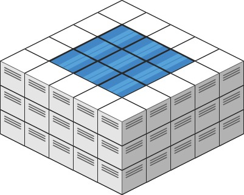

407. 接雨水 II
最小堆 + 向外扩（木桶效应）：边界全部入堆，每次取最矮挡板扩邻居；蓄水 = max(0, 挡板 − 新格高)。
思路
- 一格能蓄多少水，取决于它到任意边界的路径上最高的挡板（取最小那条路）；从外往内灌最省事。
- 边界格全部入堆当初始挡板；每次弹堆顶（当前最矮挡板）扩四邻：邻居蓄水
max(0, cur − h)，再以max(cur, h)入堆当新挡板。 - 堆保证每次扩的都是全局最矮挡板——比它低的邻居先被灌满，比它高的自己成为新挡板。
- 堆元素带
(r, c, 挡板高)；vis防重入。1 行或 1 列没有内部格，自然得 0。
图解
最优解
1import java.util.*;2 3class Solution {4 public int trapRainWater(int[][] heightMap) {5 int m = heightMap.length, n = heightMap[0].length;6 boolean[][] vis = new boolean[m][n];7 // 小根堆里放「已访问的边界格」：每次取最矮的挡板向外扩（木桶效应）8 PriorityQueue<int[]> pq = new PriorityQueue<>((a, b) -> a[2] - b[2]);9 for (int i = 0; i < m; i++)10 for (int j = 0; j < n; j++)11 if (i == 0 || i == m - 1 || j == 0 || j == n - 1) {12 pq.offer(new int[]{i, j, heightMap[i][j]});13 vis[i][j] = true;14 }15 int ans = 0;16 int[][] dirs = {{1, 0}, {-1, 0}, {0, 1}, {0, -1}};17 while (!pq.isEmpty()) {18 int[] cur = pq.poll();19 for (int[] d : dirs) {20 int ni = cur[0] + d[0], nj = cur[1] + d[1];21 if (ni < 0 || ni >= m || nj < 0 || nj >= n || vis[ni][nj]) continue;22 vis[ni][nj] = true;23 // 当前格的水位 = 走到边界的路上最高的挡板；新格蓄水 = 挡板 − 它的高度24 ans += Math.max(0, cur[2] - heightMap[ni][nj]);25 // 新格作为新边界入堆，挡板高度取 max(老挡板, 自己)26 pq.offer(new int[]{ni, nj, Math.max(cur[2], heightMap[ni][nj])});27 }28 }29 return ans;30 }31}题目
给你一个 m x n 的矩阵，其中的值均为非负整数，代表二维高度图每个单元的高度，请计算图中形状最多能接多少体积的雨水。
示例 1:

输入: heightMap = [[1,4,3,1,3,2],[3,2,1,3,2,4],[2,3,3,2,3,1]] 输出: 4 解释: 下雨后，雨水将会被上图蓝色的方块中。总的接雨水量为1+2+1=4。
示例 2:

输入: heightMap = [[3,3,3,3,3],[3,2,2,2,3],[3,2,1,2,3],[3,2,2,2,3],[3,3,3,3,3]] 输出: 10
提示:
m == heightMap.lengthn == heightMap[i].length1 <= m, n <= 2000 <= heightMap[i][j] <= 2 * 104
题面取自力扣当前版本。
数据快照 2026-11-04。题面版权归力扣所有，本站点仅供本人学习使用，请勿对外发布。